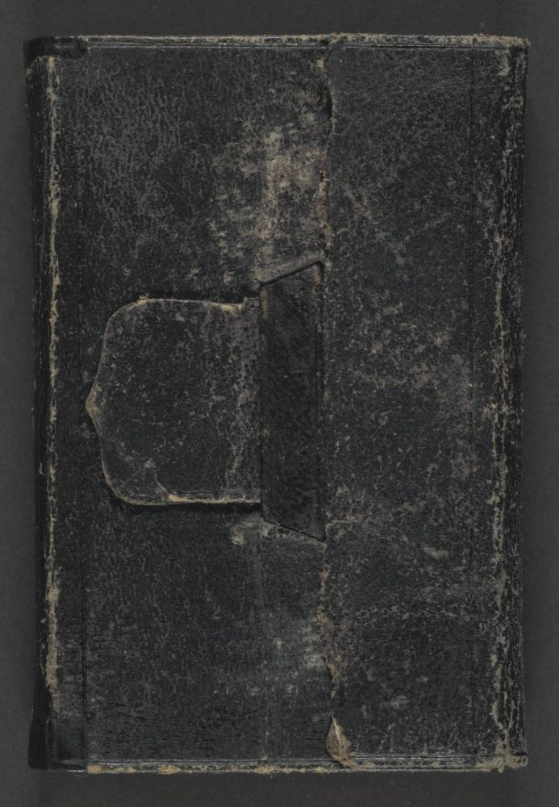

About the diary
An “Excelsior Diary” for 1884, with one printed page for each day of the year and account pages at the back. Roosevelt wrote on about fifty of its 400-plus pages. Most of the other days are blank.
Roosevelt kept seven pocket diaries from 1878 to 1884. The Library of Congress holds all of them. The 1884 diary is shown from new full-color scans; the six earlier volumes come from the black-and-white microfilm made in the 1960s. Where the film skips a blank leaf or photographs a page twice, the book here follows the film.
Reading the transcription
- word? uncertain reading
- [illegible] can't be read
wordstruck through by Roosevelt- word added above the line
Roosevelt's spelling and punctuation are kept exactly as written. Printed headings, later archive markings and the condition of the page are listed separately from his handwriting.

Images and the original diary: Library of Congress, Manuscript Division, Theodore Roosevelt Papers (mss38299, Series 8, Vol. 7).